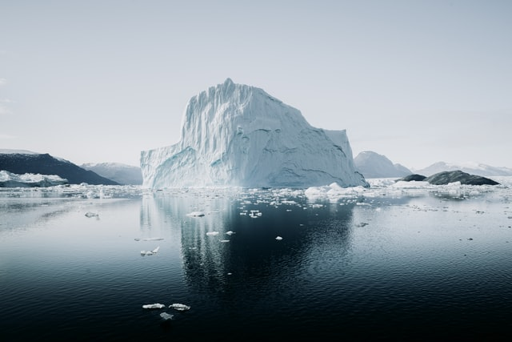
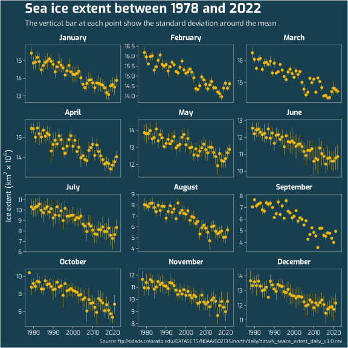
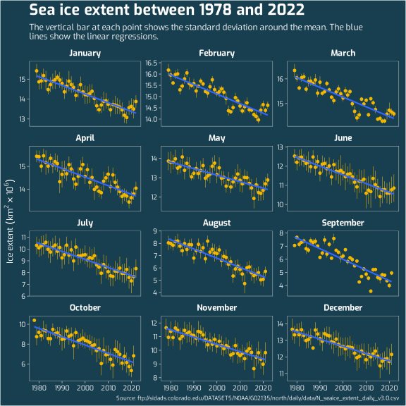
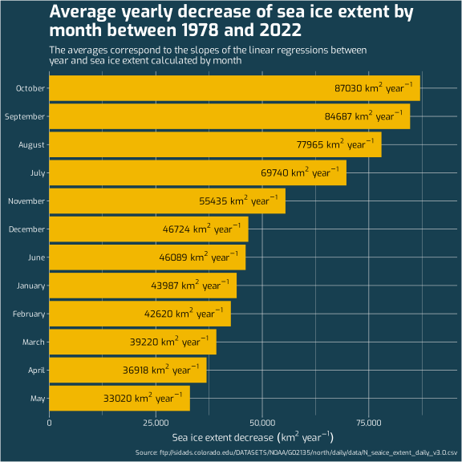
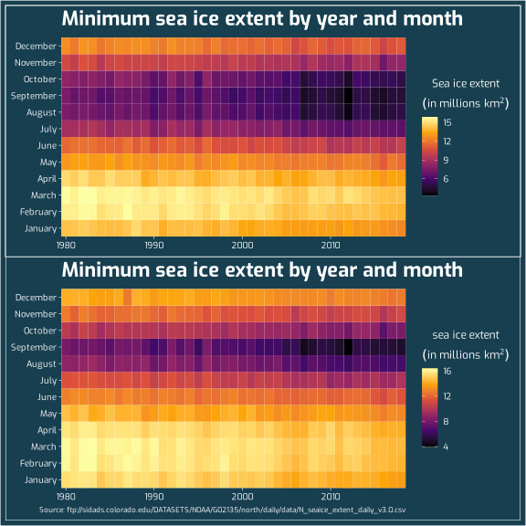

Arctic sea ice extent
It is well known that the Arctic sea ice extent is decreasing at an increasing pace. As stated by the National Snow & Ice Data Center:
According to scientific measurements, both the thickness and extent of summer sea ice in the Arctic have shown a dramatic decline over the past thirty years. This is consistent with observations of a warming Arctic.
Thanks to the NSIDC, their data is available for download. For this post, I was interested in visualizing these scientific measurements.

Photo by Annie Spratt on Unsplash
The data
The data consist of four variables:
-
Year,Month,Day: Period of the measurements. -
Extent: Sea ice extent in millions km2.
| Year | Month | Day | Extent |
|---|---|---|---|
| 1978 | 10 | 26 | 10.231 |
| 1978 | 10 | 28 | 10.420 |
| 1978 | 10 | 30 | 10.557 |
| 1978 | 11 | 1 | 10.670 |
| 1978 | 11 | 3 | 10.777 |
| 1978 | 11 | 5 | 10.968 |
| 1978 | 11 | 7 | 11.080 |
| 1978 | 11 | 9 | 11.189 |
| 1978 | 11 | 11 | 11.314 |
| 1978 | 11 | 13 | 11.460 |
Temporal evolution of the Arctic sea ice extent
For the following visualization, I calculated the average and the standard deviation of sea ice extent for each month and each year.

Rate of change of the Arctic sea ice extent
The previous graph has shown that Arctic sea ice is undoubtedly decreasing for the past few decades. But at which rate is it decreasing? Is the decreasing rate the same for all the months? The average decreasing rate of sea ice extent can be calculated by using the slope of a linear regression between year and sea ice extent.

Now, we can visualize the yearly average sea ice extent decrease for each month.

Another way of visualizing the decrease in sea ice extent consists of using heat maps. In the following graphs, the minimum and maximum sea ice extent for each combination of month/year are presented. The graphs show that both the minimum and maximum sea ice extent are decreasing over time, which is more striking for the September month.
